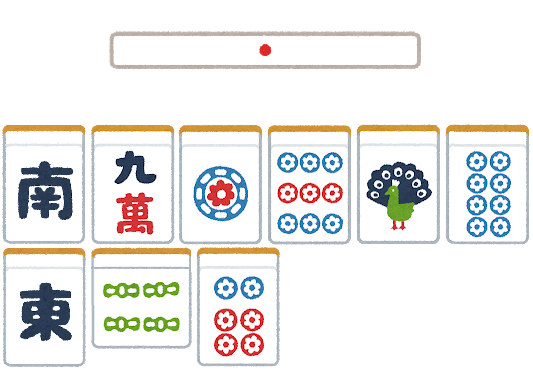

リーチ
麻雀の基本にして重要役
リーチとは？
手牌が聴牌（テンパイ）した状態、つまりあと1枚アガリ牌をツモるかロンすれば役が完成する状態になったときに「リーチ」と宣言して横に牌を捨てることで成立する役です。
一度リーチをすると、手牌を変えることはできません（暗槓を除く）。
成立条件
- 門前であること（ポン、チー、大明槓をしていない状態）。
- 手牌が聴牌していること。
- 点棒が1000点以上あること（リーチ棒として1000点を供託するため）。
リーチのメリット
リーチをすることで、以下のようなメリットがあります。
- 1翻役として認められる。
- 裏ドラが乗る可能性がある。
- 一発、ツモ、平和などの追加役が狙える。